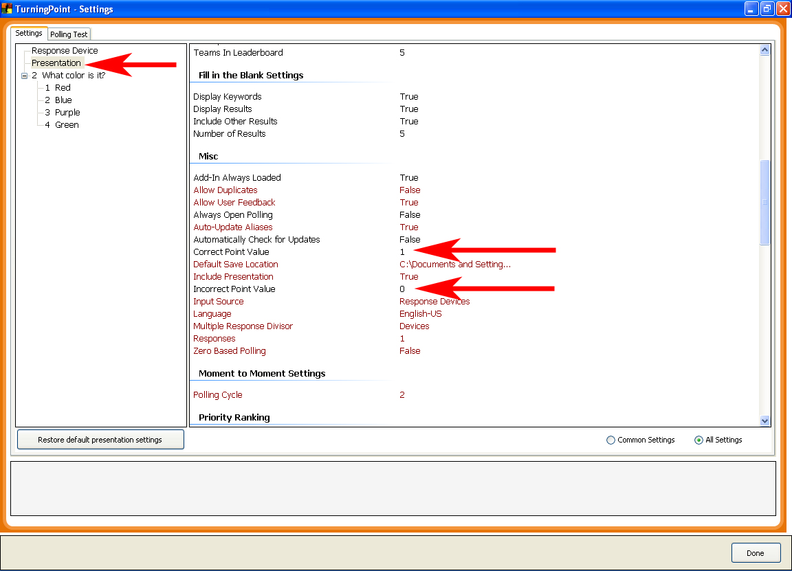
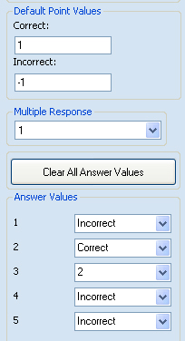

Changing Answer Values (points):
TurningPoint allows the user to set point values for correct and incorrect responses ranging from -10000 to 10000 points. The default point values can be set to affect all answer values in a presentation (default for correct is 1 point, incorrect is 0 point). The user can also assign point values for individual answers overriding the default point value. This method can be used to assign weighted points to an answer.
Setting Default Answer Values for the entire presentation:
- From the “Tools” icon, select “Settings”
- Select “Presentation”.
- Scroll to the Misc section of the Settings menu and locate “Correct Point Value” and “Incorrect Point Value”.
- Change these settings to the desired value.
- Click “Apply all” and the click “Done”. Every answer in your presentation will now receive the defined values for correct and incorrect answers.

Changing the default answer values for an individual slide
It is also possible to change the Correct and Incorrect answer values for individual slides. This can be preformed from the TurningPoint pane located at the right hand side of the screen where you edit your slides. Editing values in this window affect the slide currently selected only.
In order for TurningPoint to apply a value to an answer you must indicate what answers are correct and incorrect. The default for an answer value is “No Value”. TurningPoint will not assign a point value to these answers. You can select answer values by clicking on the drop down menus in the Answer Values window. Note that once you select a correct answer the remaining fields are changed to Incorrect automatically.
TurningPoint also allows the user to assign numerical point values to individual answers. This technique is useful when a question has multiple correct answers but you would like to indicate that one of the answers is “more correct” and therefore requires a higher point value. To assign a numerical point value to an answer, click directly on the Answer Value, highlighting it, and then enter a numeric point value.
In the example provided we have indicated to TurningPoint that:
- Answer 2 will receive 1 point.
- Answers 1, 4, and 5 will receive -1 points.
- Answer 3 will receive 2 points.
